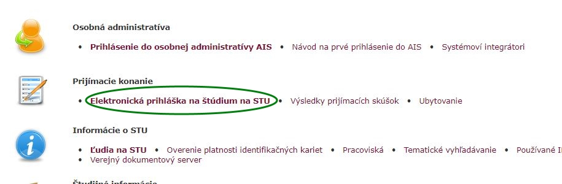
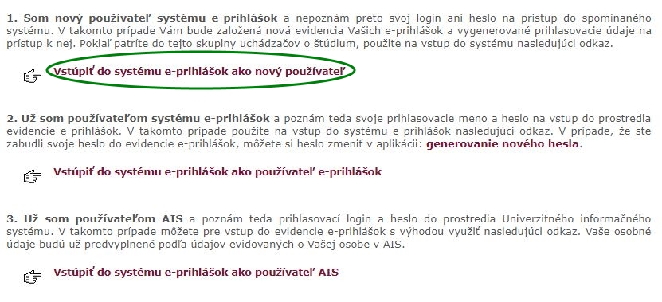
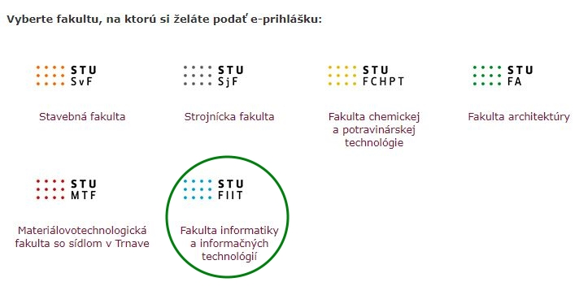
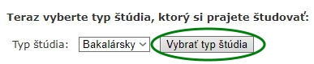
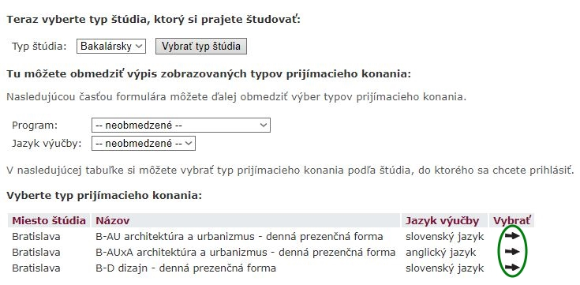
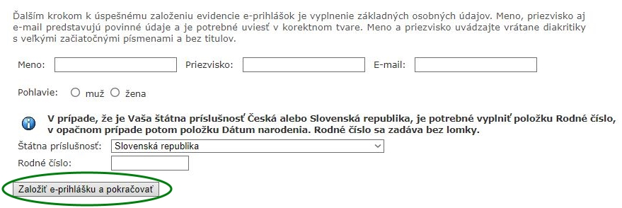

Prihlášku je možné podľa nasledujúcich pokynov podať do 31. marca 2018.
Štrukturovaný životopis. Oporúčame použiť šablonu.
Čestné prehlásenie s vlastnoručným podpisom, že Váš zdravotný stav Vám umožňuje študovať na vysokej škole. Ak máte zmenenú pracovnú schopnosť, musíte priložiť potvrdenie lekára o zdravotnej spôsobilosti,
Potvrdenie (kópia) o zaplatení poplatku za materiálne zabezpečenie prijímacieho konania, iba v prípade, ak poplatok bol uhradený poštovým poukazom na účet.
Overené kópie umiestnení na rôznych odborných súťažiach, ak uchádzač chce získať bonusové body.
V časti „Správa pre prijímateľa“ musí uchádzač uviesť svoje meno a priezvisko.
Prihlášku vytlačte, podpíšte a spolu s potrebnými prílohami odošlite na adresu:
FIIT STU v Bratislave
Ilkovičova 2
842 16 Bratislava 4
Prihlášku je možné vyplniť elektronicky v akademickom informačnom systéme AIS podľa nasledovných pokynov.
V hlavnom menu systému AIS zvoľte možnosť Elektronická prihláška na štúdium na STU v sekcií Prijímacie konanie
Pre vytvorenie účtu v systéme AIS zvoľte možnosť Vstúpiť do systému e-prihlášok ako nový používateľ. Ak už účet máte, ďalej sa prihlasujte prostredníctvom možnosti Vstúpiť do systému e-prihlášok ako používateľ e-prihlášok. Ak už ste študentom Slovenskej technickej univerzity a máte prístup do systému AIS, zvoľte možnosť Vstúpiť do systému e-prihlášok ako používateľ AIS.
Zvoľte Fakultu informatiky a informačných technológií
Vyberte typ štúdia, na ktoré sa chcete prihlásiť
Vyberte študijný program, na ktorý sa chcete prihlásiť. Pokračujte kliknutím na šipku v stĺpci "vybrať" pri Vami zvolenom programe
Vyplňte požadované osobné údaje a podajte prihlášku kliknutím na tlačidlo Založiť e-prihlášku a pokračovať
